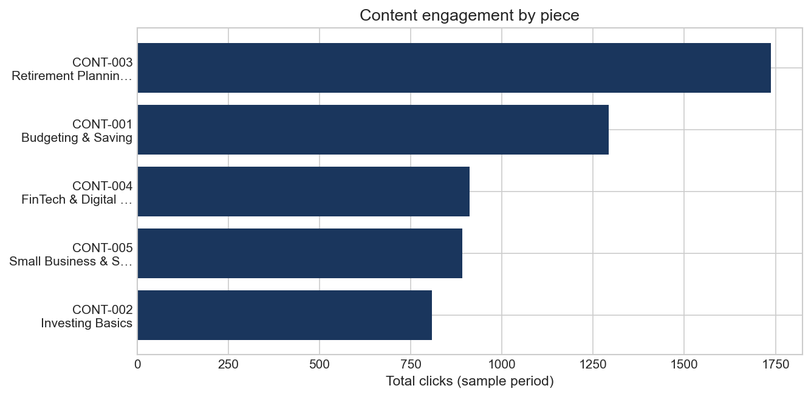
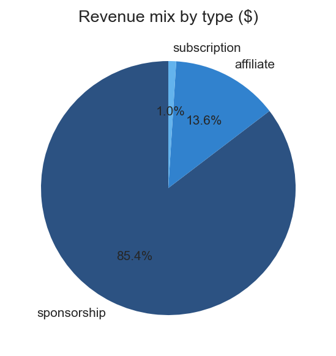
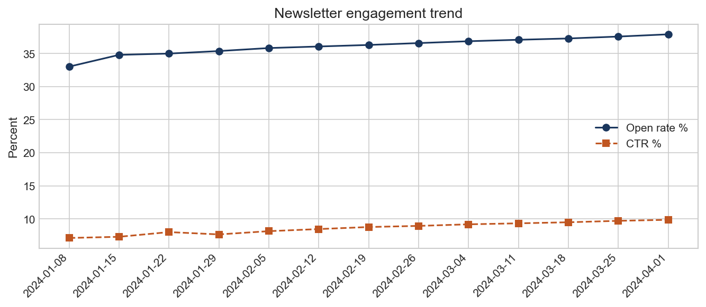
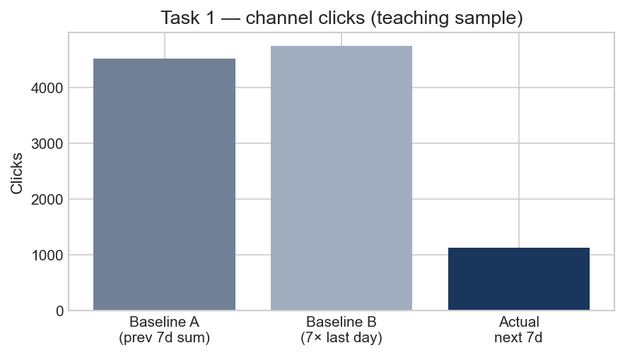
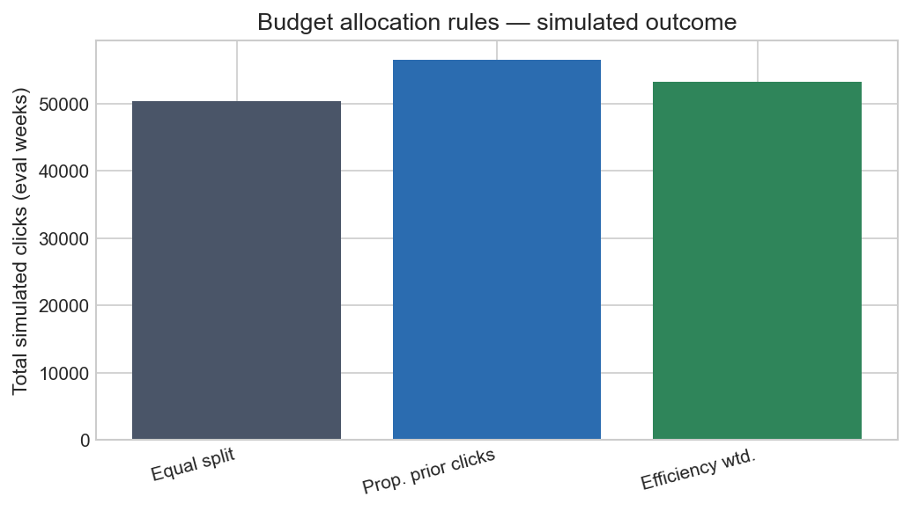

Overview
This project mirrors an analyst role: ingest messy exports (JSON, CSV, TSV), load into a dimensional warehouse, then run engagement and revenue KPIs, a next-period clicks baseline (Task 1), and a budget allocation backtest (Task 2). All data is synthetic and safe for a public portfolio.
Open the data & methodology page for file locations, schema, and how to reproduce results.
Key visuals
Content performance

Revenue mix

Newsletter trend

Analysis highlights
Task 1 — Next-period engagement (clicks)
Channel-level baseline forecast (teaching sample with sparse daily rows). Two simple baselines vs. actual “next week” sum.

Task 2 — Budget allocation
Compared allocating weekly spend across campaigns using equal split, proportional to prior-week clicks, and efficiency-weighted splits under a linear clicks-per-dollar model.

Action plan
- Content: Prioritize themes and titles similar to top click-getters (e.g. retirement, budgeting) for the next content calendar; A/B test headlines on FinTech and investing pieces to lift CTR.
- Revenue: Protect sponsorship pipeline; grow affiliate placements on high-traffic posts. Tie subscription campaigns to CAMP-Q1-SUB-style programs and track cost per sub vs. LTV.
- Newsletter: Maintain send quality — open rate and CTR are trending up; monitor unsubscribes and bounces; segment finance topics for relevance.
- Paid spend: Pilot shifting budget toward last week’s stronger click performers before moving to full efficiency-weighted rules; validate with holdout weeks as more daily data arrives.
- Data: Expand daily fact tables (more days per content/campaign) so per-content forecasts and allocation backtests stabilize; keep pipelines in Python and R for auditability.
- Portfolio: Publish this page plus linked artifacts on GitHub Pages or your static host; point recruiters to
project01-details.htmlfor reproducibility.